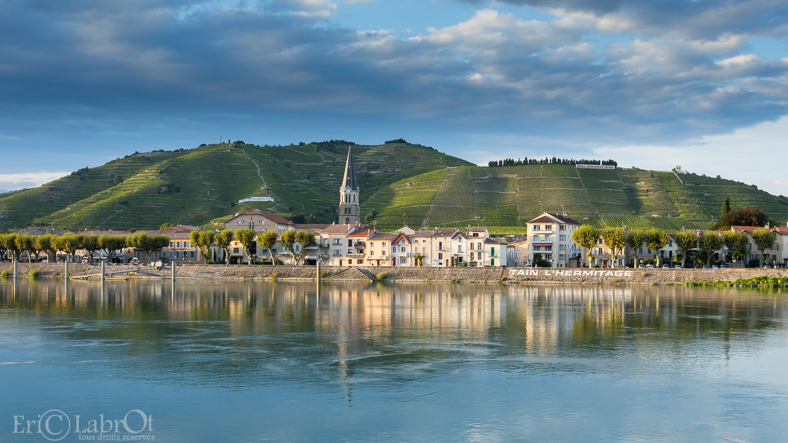

Week-end à Valence

Tain-l'Hermitage et Tournon-sur-Rhône — le vignoble en terrasse au-dessus du Rhône
Marché du Samedi
Place des Clercs — ~100 stalls spilling toward the cathedral, 7h–14h year-round. [5] Arrive early for the produce; the stalls thin after 12h. Collect your mise en bouche: a Suisse de Valence from Maison Nivon — an orange-blossom soldier-shaped shortbread created in 1799 to honour the Swiss Guards, 250 g ≈ €8.50. [6]
Promenade de Vieux Valence
The city core is a two-hour loop at most. Walk it unhurried.
- Champ de Mars — 3 ha esplanade from 1773; Château de Crussol stares back at you from across the Rhône. [29]
- Kiosque Peynet — 1890 bandstand; Raymond Peynet drew his famous Amoureux lovers here in 1942. [7]
- Parc Jouvet — 7 ha, inaugurated by President Loubet in 1905, Jardin Remarquable since 2006. [8]
- Les Côtes — medieval stepped alleys (Saint-Martin, Saint-Estève, des Chapeliers) that Rhône boatmen climbed to reach the upper town.
- Maison des Têtes — 1528–1532 Gothic-to-Renaissance facade carved with allegorical heads; courtyard free, no booking. [9]
- Musée de Valence — Art et Archéologie in the former bishops' palace. €9 / €7 reduced. [11]
Château de Crussol
The ruined 12th-century fortress on the limestone cliff across the Rhône — the silhouette you've been staring at all morning from Champ de Mars. [12] Two options: a 20-minute push from the foot-of-castle car park, or a full 4.8 km / 210 m ridge loop (1h30–2h). Early June is in-window, but go early with water and a hat — exposed limestone. [13]

Restaurant Pic
Anne-Sophie Pic · 3 Étoiles Michelin · Seule table multi-étoiles à Valence [1]
Réservation en ligne plusieurs mois à l'avance. Maison Pic (Relais & Châteaux) offre 17 chambres + piscine — option logement sur place. [4] Two 1-star alternatives for a lighter budget: Flaveurs and L'Épicurien, both in the city centre.
Hermitage — Tain & Tournon
Ten minutes north by TER train (~27 services daily). [14] No car needed. Tain-l'Hermitage and Tournon-sur-Rhône face each other across the river; the terraced granite hillside is the view you carried away from dinner.
- Marc Seguin footbridge — built 1847–1849, oldest suspension bridge still in service in France. Cross to Tournon for lunch. [20]
- Château-Musée de Tournon — May–June PM only 14h–18h, €5 / €4. [21]
- Train de l'Ardèche — steam train departs Saint-Jean-de-Muzols 10h15 through the Gorges du Doux, returns 17h00. Full-day commitment; skip if you want wine time. [22]
Une Excursion
You only get one on a weekend. Pick by theme.
Saveurs de la Drôme
- Suisse de Valence — Maison Nivon, founded 1856. Orange-blossom shortbread in soldier form. The defining local pastry.
- Ravioles du Dauphiné — tiny pasta pillows of Comté, fresh cheese and herbs. Label Rouge + IGP. Order at La Ravioline (18 rue Dauphine) or visit the free factory at Mère Maury near Romans.
- Picodon AOP — small firm raw-goat cheese from Drôme/Ardèche; AOP 1983. Ask for affiné if you want the firmer, more intense version.
- Pogne de Romans — orange-blossom crown brioche, medieval Easter origin. Reference: Maison Pascalis in Bourg-de-Péage, four generations since 1892.
Logistique
| Train | TGV: Paris → Valence TGV ~2h15, Lyon → Valence TGV ~34 min. TGV station (Alixan, 10 km out) connects to Valence-Ville by TER in 8 min (hourly) or InterCitéa bus every 30 min. |
| Parking | Q-Park Champ de Mars — 842 spaces, 24/7, directly beside Kiosque Peynet and the museum. Free 12h–14h; first 30 min free. [28] |
| Vélo | Libélo (68 stations, e-bikes) for in-town hops: first 30 min free. Carbone Zéro at 24 rue Denis Papin (next to gare) for ViaRhôna day-trips; e-bikes €35–55/day, book ~1 month ahead in high season. [27] |
| Météo (juin) | Highs 23→27 °C, lows ~13 °C. ~13 rain-days over the month. Light layer + compact shell sufficient. |
| Logement | Two zones: Vieux Valence (near cathedral, walk everywhere) or Maison Pic (17 rooms + pool, 15 min south on avenue Victor Hugo — walk to and from dinner). [4] |
| Question ouverte | La Brasserie Pic at the same address — whether walk-in availability the morning after the tasting menu allows a lower-commitment second breakfast on-site. Not confirmed. |
La lavande drômoise ne fleurit qu'à partir de mi-juin dans la plaine (Grignan, Tricastin) et continue jusqu'à mi-juillet en altitude. Début juin, les champs autour de Grignan seront verts. [26] Si vous venez pour les champs de lavande : revenez en juillet. Si vous venez pour le château, la table et les vignes : c'est exactement la bonne saison.